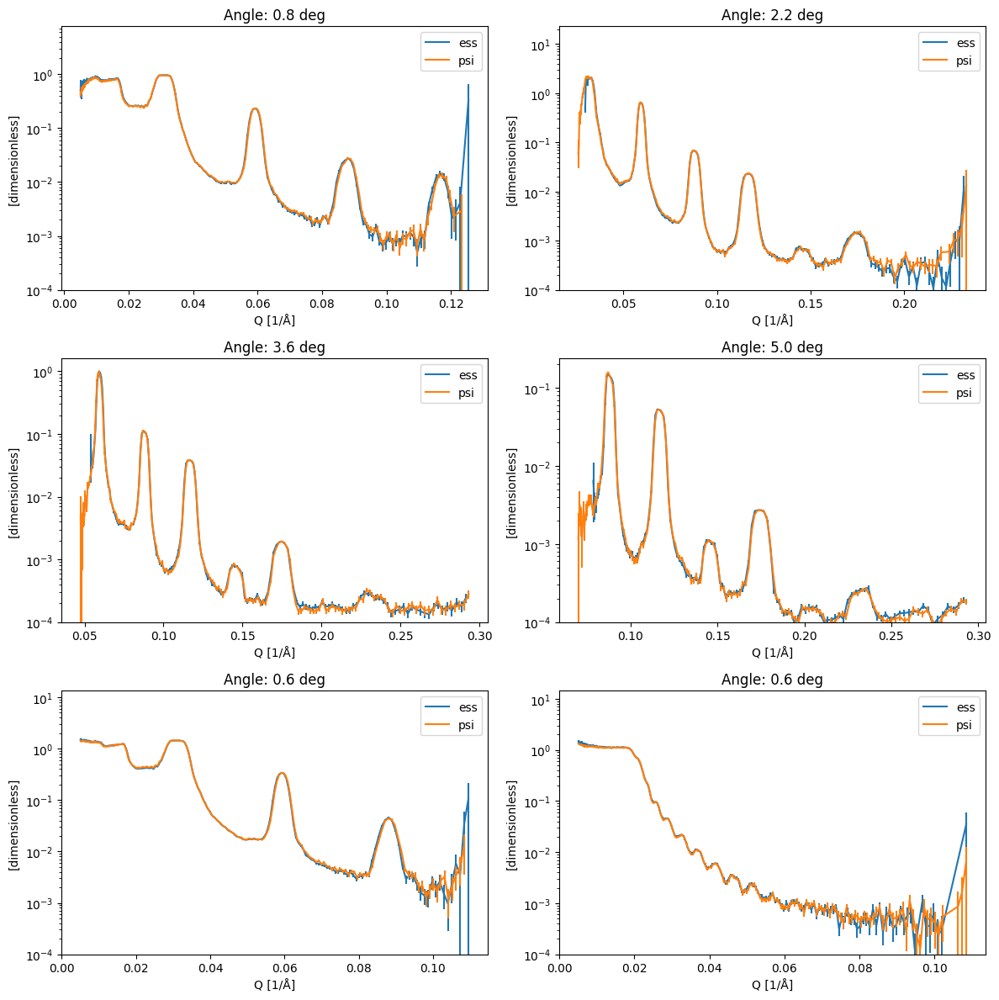

Comparison with PSI reduction software#
This notebook is for validating the results from the essreflectometry packages by comparing them to the ones obtained by the PSI software at the Amor beamline.
[1]:
import warnings
import orsopy
import matplotlib.pyplot as plt
import scipp as sc
import plopp as pp
from ess import amor
from ess.amor import data # noqa: F401
from ess.reflectometry.types import *
from ess.amor.types import ChopperPhase
# The files used in this tutorial have some issues that makes scippnexus
# raise warnings when loading them. To avoid noise in the notebook the warnings are silenced.
warnings.filterwarnings('ignore', 'Failed to convert .* into a transformation')
warnings.filterwarnings('ignore', 'Invalid transformation, missing attribute')
Recreate reference files using Jochens Amor data reduction software#
step 1#
%%bash
git clone https://github.com/jochenstahn/amor.git
wget -P raw https://public.esss.dk/groups/scipp/ess/amor/1/amor2023n000{608..614}.hdf
step 2#
%%bash
args='-Y 2023 -d raw -n 614 -m 0.05 -co -7.5 -of ort'
rm raw/614.norm
python amor/neos.py $args -f 614
for i in `seq 608 613`
do
python amor/neos.py $args -f $i -o $i
done
Run essreflectometry on the same files#
[2]:
workflow = amor.AmorWorkflow()
workflow[SampleSize[SampleRun]] = sc.scalar(10.0, unit='mm')
workflow[SampleSize[ReferenceRun]] = sc.scalar(10.0, unit='mm')
workflow[ChopperPhase[SampleRun]] = sc.scalar(-7.5, unit='deg')
workflow[WavelengthBins] = sc.geomspace('wavelength', 2.8, 12.5, 2001, unit='angstrom')
workflow[QBins] = sc.geomspace(
dim='Q', start=0.00505, stop=2.93164766e-01, num=391, unit='1/angstrom'
)
workflow[YIndexLimits] = sc.scalar(11), sc.scalar(41)
workflow[ZIndexLimits] = sc.scalar(80), sc.scalar(370)
workflow[BeamDivergenceLimits] = sc.scalar(-0.75, unit='deg'), sc.scalar(0.75, unit='deg')
# Chopper phase value in the file is wrong, so we set it manually
workflow[ChopperPhase[ReferenceRun]] = sc.scalar(-7.5, unit='deg')
# The sample rotation value in the file is slightly off, so we set it manually
workflow[SampleRotationOffset[ReferenceRun]] = sc.scalar(0.05, unit='deg')
workflow[Filename[ReferenceRun]] = amor.data.amor_run(614)
reference_result = workflow.compute(ReducedReference)
# Set the result back onto the pipeline to cache it
workflow[ReducedReference] = reference_result
/home/runner/work/essreflectometry/essreflectometry/.tox/docs/lib/python3.11/site-packages/scippnexus/base.py:402: UserWarning: Invalid transformation, /entry1/Amor/detector/transformation/height missing attribute 'vector'
return maybe_transformation(self, value=dg)
/home/runner/work/essreflectometry/essreflectometry/.tox/docs/lib/python3.11/site-packages/scippnexus/base.py:402: UserWarning: Invalid transformation, /entry1/Amor/detector/transformation/rotation missing attribute 'vector'
return maybe_transformation(self, value=dg)
[3]:
mu = {
'608': 0.8,
'609': 2.2,
'610': 3.6,
'611': 5.0,
'612': 0.6,
'613': 0.6,
}
results = sc.DataGroup({'ess': sc.DataGroup(), 'psi': sc.DataGroup()})
# ESS results
for key in mu:
print(key, '... ', end='')
workflow[SampleRotationOffset[SampleRun]] = sc.scalar(0.05, unit='deg')
workflow[Filename[SampleRun]] = amor.data.amor_run(key)
da = workflow.compute(ReflectivityOverQ).hist()
da.coords['Q'] = sc.midpoints(da.coords['Q'], dim='Q')
results['ess'][key] = da
print('Done!')
608 ...
/home/runner/work/essreflectometry/essreflectometry/.tox/docs/lib/python3.11/site-packages/scippnexus/base.py:402: UserWarning: Invalid transformation, /entry1/Amor/detector/transformation/height missing attribute 'vector'
return maybe_transformation(self, value=dg)
/home/runner/work/essreflectometry/essreflectometry/.tox/docs/lib/python3.11/site-packages/scippnexus/base.py:402: UserWarning: Invalid transformation, /entry1/Amor/detector/transformation/rotation missing attribute 'vector'
return maybe_transformation(self, value=dg)
Done!
609 ...
/home/runner/work/essreflectometry/essreflectometry/.tox/docs/lib/python3.11/site-packages/scippnexus/base.py:402: UserWarning: Invalid transformation, /entry1/Amor/detector/transformation/height missing attribute 'vector'
return maybe_transformation(self, value=dg)
/home/runner/work/essreflectometry/essreflectometry/.tox/docs/lib/python3.11/site-packages/scippnexus/base.py:402: UserWarning: Invalid transformation, /entry1/Amor/detector/transformation/rotation missing attribute 'vector'
return maybe_transformation(self, value=dg)
Done!
610 ...
/home/runner/work/essreflectometry/essreflectometry/.tox/docs/lib/python3.11/site-packages/scippnexus/base.py:402: UserWarning: Invalid transformation, /entry1/Amor/detector/transformation/height missing attribute 'vector'
return maybe_transformation(self, value=dg)
/home/runner/work/essreflectometry/essreflectometry/.tox/docs/lib/python3.11/site-packages/scippnexus/base.py:402: UserWarning: Invalid transformation, /entry1/Amor/detector/transformation/rotation missing attribute 'vector'
return maybe_transformation(self, value=dg)
Done!
611 ...
/home/runner/work/essreflectometry/essreflectometry/.tox/docs/lib/python3.11/site-packages/scippnexus/base.py:402: UserWarning: Invalid transformation, /entry1/Amor/detector/transformation/height missing attribute 'vector'
return maybe_transformation(self, value=dg)
/home/runner/work/essreflectometry/essreflectometry/.tox/docs/lib/python3.11/site-packages/scippnexus/base.py:402: UserWarning: Invalid transformation, /entry1/Amor/detector/transformation/rotation missing attribute 'vector'
return maybe_transformation(self, value=dg)
Done!
612 ...
/home/runner/work/essreflectometry/essreflectometry/.tox/docs/lib/python3.11/site-packages/scippnexus/base.py:402: UserWarning: Invalid transformation, /entry1/Amor/detector/transformation/height missing attribute 'vector'
return maybe_transformation(self, value=dg)
/home/runner/work/essreflectometry/essreflectometry/.tox/docs/lib/python3.11/site-packages/scippnexus/base.py:402: UserWarning: Invalid transformation, /entry1/Amor/detector/transformation/rotation missing attribute 'vector'
return maybe_transformation(self, value=dg)
Downloading file 'amor2023n000613.hdf' from 'https://public.esss.dk/groups/scipp/ess/amor/2/amor2023n000613.hdf' to '/home/runner/.cache/ess/amor'.
Done!
613 ...
/home/runner/work/essreflectometry/essreflectometry/.tox/docs/lib/python3.11/site-packages/scippnexus/base.py:402: UserWarning: Invalid transformation, /entry1/Amor/detector/transformation/height missing attribute 'vector'
return maybe_transformation(self, value=dg)
/home/runner/work/essreflectometry/essreflectometry/.tox/docs/lib/python3.11/site-packages/scippnexus/base.py:402: UserWarning: Invalid transformation, /entry1/Amor/detector/transformation/rotation missing attribute 'vector'
return maybe_transformation(self, value=dg)
Done!
[4]:
# PSI results
for key in mu:
d = orsopy.fileio.load_orso(amor.data.amor_psi_software_result(key))[0].data
y = sc.array(dims=['Q'], values=d[:, 1], variances=d[:, 2] ** 2)
results['psi'][key] = sc.DataArray(
data=y, coords={'Q': sc.array(dims=['Q'], values=d[:, 0], unit='1/angstrom')}
)
Downloading file '608.Rqz.ort' from 'https://public.esss.dk/groups/scipp/ess/amor/2/608.Rqz.ort' to '/home/runner/.cache/ess/amor'.
Downloading file '609.Rqz.ort' from 'https://public.esss.dk/groups/scipp/ess/amor/2/609.Rqz.ort' to '/home/runner/.cache/ess/amor'.
Downloading file '610.Rqz.ort' from 'https://public.esss.dk/groups/scipp/ess/amor/2/610.Rqz.ort' to '/home/runner/.cache/ess/amor'.
Downloading file '611.Rqz.ort' from 'https://public.esss.dk/groups/scipp/ess/amor/2/611.Rqz.ort' to '/home/runner/.cache/ess/amor'.
Downloading file '612.Rqz.ort' from 'https://public.esss.dk/groups/scipp/ess/amor/2/612.Rqz.ort' to '/home/runner/.cache/ess/amor'.
Downloading file '613.Rqz.ort' from 'https://public.esss.dk/groups/scipp/ess/amor/2/613.Rqz.ort' to '/home/runner/.cache/ess/amor'.
Plot reflectivity curve comparison#
[5]:
fig, axs = plt.subplots(3, 2, figsize=(12, 12))
for ax, (key, angle) in zip(axs.ravel(), mu.items(), strict=True):
pp.plot(
{
facility: results[facility][key][results[facility][key].data > 0.0]
for facility in results
},
ax=ax,
norm='log',
ls='solid',
marker=None,
vmin=1.0e-4,
title=f'Angle: {angle} deg',
)
fig.tight_layout()

Overlay curves from same sample at different angle, should be on top of each other#
[6]:
fig, axs = plt.subplots(1, 2, figsize=(12, 4))
for ax, (facility, res) in zip(axs.ravel(), results.items(), strict=True):
pp.plot(
dict(list(res.items())[:4]), # First 4 curves
ax=ax,
norm='log',
ls='solid',
marker=None,
vmin=1.0e-4,
title=facility,
)